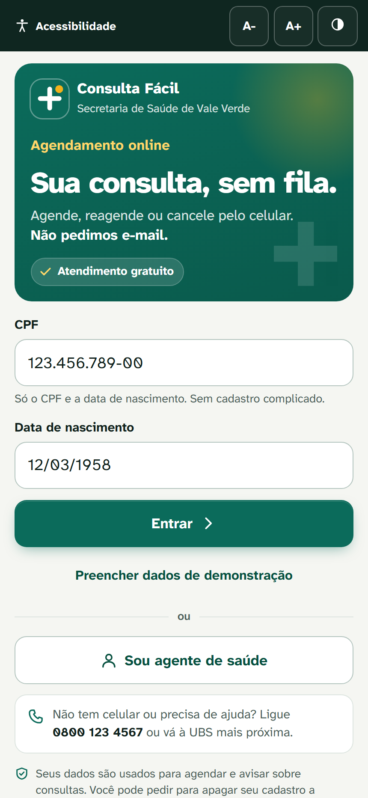
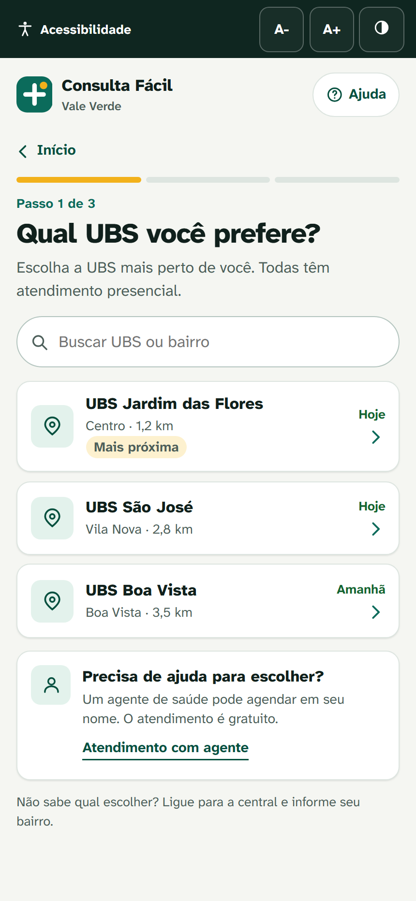
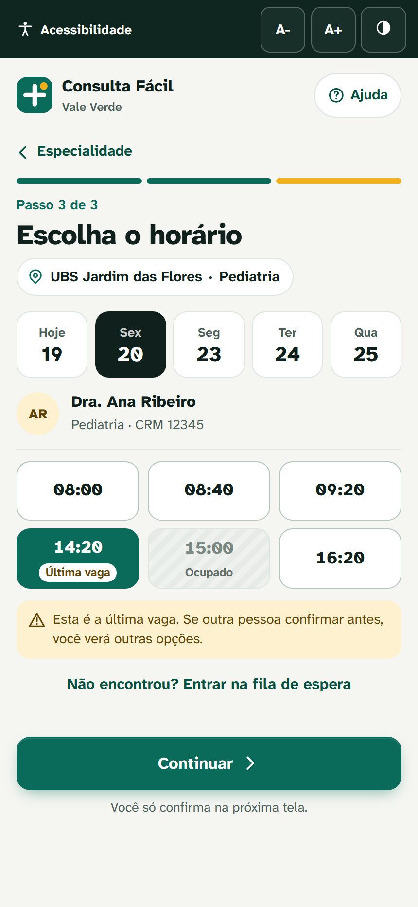
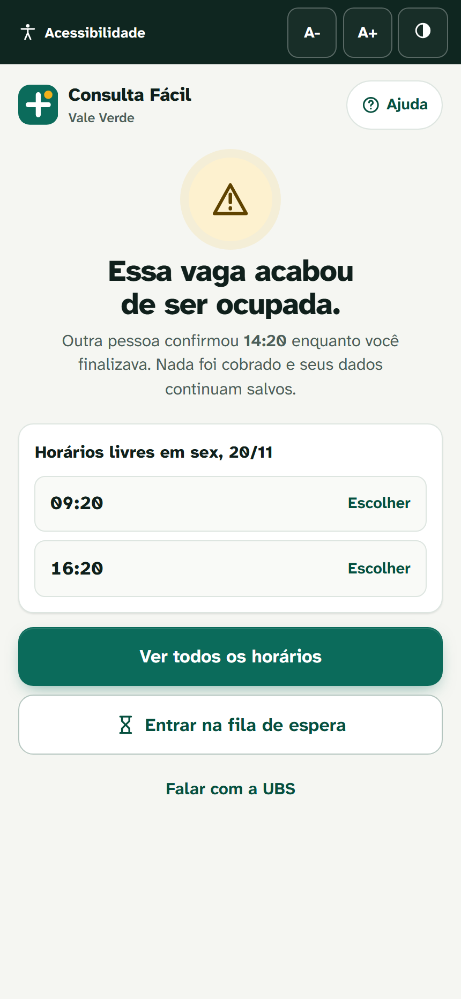
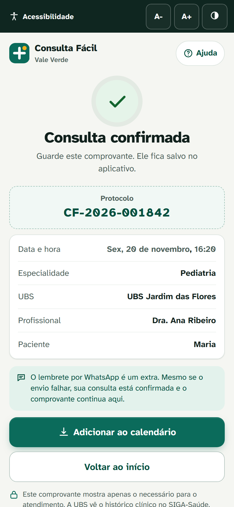

A3, estudo de caso aplicado: diagnóstico, processo, requisitos, arquitetura, organização ágil e operação.
| Nome completo | RA |
|---|---|
| [nome completo] | [RA] |
| [nome completo] | [RA] |
| [nome completo] | [RA] |
| [nome completo] | [RA] |
| [nome completo] | [RA] |
O relatório tem quatro páginas de análise e dois apêndices: o protótipo navegável, com capturas de tela, e a declaração de uso de IA com as referências.
Vale Verde tem 210 mil habitantes e 32 UBS. Às 7h, 4 mil pessoas tentam liberar as vagas da semana e 18% faltam às consultas. O piloto tratou o agendamento como uma tela nova sobre o SIGA: a demonstração usou dados de exemplo e o caminho sem erro. Em produção, duas confirmações caíram na mesma vaga e o SMS falhou.
Tabela 1. Pessoas atingidas e o custo de cada falha.
| Pessoa ou área | O que a falha fez com ela | O que deveria ter sido medido |
|---|---|---|
| Paciente idoso 68 anos, sem e-mail | Travou no cadastro, perdeu a vaga e dependeu da filha. A tela pedia um dado que ela não tinha. | Conclusão por faixa de idade e tempo até o comprovante. |
| Paciente trabalhador | Não consegue ligar às 6h. Tentou às 7h, pegou o sistema lento e desistiu de marcar. | Sucesso no pico e desistência por etapa. |
| Recepção e médico | A recepcionista virou suporte e remarcou no papel. Duas famílias chegaram para a mesma consulta de pediatria. | Retrabalho, duplicidade por profissional e faltas por horário. |
| Gestor, ouvidoria e DPO | Souberam pela ouvidoria; o painel dizia que tudo estava bem. Reclamações sem protocolo nem log; o DPO não sabia quais dados iriam para o SMS. | Agendamentos concluídos e falhas por etapa; reclamações e retenção de dados. |
A demonstração provou que a tela ia de A a B. Não provou capacidade, consistência da vaga, resiliência do SMS nem conclusão por quem não tem e-mail. O painel media CPU, não agendamentos concluídos.
Tabela 2. Três atributos de qualidade, a situação do caso e a evidência de atendimento.
| Atributo | Situação em Vale Verde | Evidência que comprovaria o atendimento |
|---|---|---|
| Desempenho e capacidade | Às 7h, 4 mil pessoas tentam liberar as vagas da semana. O piloto ficou lento por quase duas horas. | Carga com 4 mil usuários por 30 min: p95 ≤ 2 s, erro < 1% e 1.200 confirmações por hora. |
| Consistência | A última vaga de pediatria recebeu duas confirmações no primeiro dia. | 200 pedidos simultâneos: uma resposta 201, 199 respostas 409 e uma linha confirmada. |
| Acessibilidade | Uma idosa sem e-mail não concluiu o cadastro. A tela exigia um campo que ela não tinha. | 5 pessoas de 60+ sem e-mail: 90% concluem em até 3 min. WCAG 2.2 AA: teclado, zoom 200% e contraste ≥ 4,5:1. |
Risco de LGPD. O lembrete pode expor especialidade ou diagnóstico na tela bloqueada, em aparelho compartilhado ou em número errado. Dados de saúde são categoria especial (LGPD, art. 5º, II).
Decisão. A mensagem diz apenas que há um lembrete no Consulta Fácil e pede CPF e data de nascimento para abrir. Opt-in no agendamento, celular confirmado, retenção de 90 dias e aprovação do DPO por modelo de texto. Quem não tem celular recebe ligação da UBS ou atendimento presencial. Acompanhamento mensal de opt-out, números errados, reclamações e amostra dos logs; revisão no fim do piloto e após incidente.
Modelo. Scrum no produto, com práticas de XP e duas semanas de descoberta. Seis sprints até o piloto. A descoberta entrega o protótipo, o mapa do banco do SIGA e um walking skeleton somente leitura; depois vêm o fluxo de agendamento, a escrita no legado e os ensaios de migração. Kanban assume suporte e incidentes após o go-live.
Por que este modelo. Três meses e um legado sem documentação impedem especificar tudo antes de ver o banco. Sprints curtas permitem testar usabilidade com idosos enquanto a integração é construída, e XP cobre teste, revisão por par e integração contínua. O risco central é o schema desconhecido: walking skeleton na sprint 1, perfilamento de CPF e agendas, contrato contra cópia mascarada e ADR-001 antes da reserva.
Risco que fica em aberto. A operação no pico e a adoção pelas recepcionistas. Scrum não garante plantão às 7h nem mudança de processo; isso exige escala de suporte, runbook e treinamento.
Tabela 3. Migração das agendas do SIGA em quatro etapas.
| Etapa | O que fazer | Critério para avançar |
|---|---|---|
| 1. Preparar | Inventariar tabelas; perfilhar CPF, telefone e agendas; definir registro mestre e reconciliação; backup com PITR; mascarar a cópia de teste; comunicar UBS e sindicato; fixar janela e rollback. | Tabelas mapeadas; restauração testada; reconciliação aprovada; DPO ciente. |
| 2. Ensaiar | Três ensaios em cópia mascarada; scripts idempotentes rodados duas vezes; simulação de interrupção; tempo medido; conferência de contagens e checksums; restauração do backup. | Zero divergência nos sete dias seguintes; ensaio cabe na janela; segunda execução não duplica nada. |
| 3. Validar | Sete dias em paralelo; comparação entre SIGA e sistema novo; a recepção valida 50 agendamentos por dia por UBS; conferir pacientes sem correspondência. | Zero vaga duplicada; zero consulta órfã; pacientes identificados ou na fila manual; aceite do gestor. |
| 4. Transicionar | Corte por UBS com feature flag; SIGA em somente leitura; um dia sem marcação; migrar; hypercare de duas semanas; reconciliação diária; rollback se a divergência passar de 0,1%. | Três UBS estáveis por 14 dias; reconciliação limpa por sete dias; nenhum incidente de dado. |
Os cinco requisitos podem ser testados por outra pessoa sem consultar o grupo. RF cobre função, RNF desempenho e RA acessibilidade; cada linha traz o critério que fecha o teste.
Tabela 4. Requisitos funcionais, não funcional e de acessibilidade.
| ID | Requisito e critério de aceitação |
|---|---|
| RF-01 Funcional | Entrar com CPF e data de nascimento e concluir o agendamento sem informar e-mail. Critério: confirmação em até 30 s com protocolo; telefone opcional; dados incompatíveis geram mensagem genérica e o telefone da UBS. |
| RF-02 Funcional | Confirmar no máximo um agendamento por vaga, mesmo com pedidos simultâneos. O segundo pedido recebe 409 com até três alternativas. |
| RF-03 Funcional | Cancelar ou remarcar até 12 h antes; depois disso, a tela bloqueia, explica a regra e oferece o telefone da UBS. Depois de três cancelamentos em 30 dias, mostrar aviso e oferecer atendimento assistido, sem bloquear o cancelamento. |
| RNF-01 Desempenho | Com 4.000 usuários simultâneos às 7h, 95% das requisições de agendamento respondem em até 2 s e o erro fica abaixo de 1%, por 30 min. |
| RA-01 Acessibilidade | Atender à WCAG 2.2 AA: contraste ≥ 4,5:1, teclado, zoom 200%, erros em texto e nenhum e-mail obrigatório. Critério: 90% de conclusão no teste moderado com 5 pessoas de 60+. |
Tabela 5. Casos de aceitação da vaga e do cancelamento repetido.
| Situação | Ação | Resultado esperado |
|---|---|---|
| Duas pessoas confirmam a última vaga no mesmo segundo, ou uma tela antiga ainda mostra a vaga livre. | POST simultâneo; a segunda confirma 30 s depois. | Uma recebe 201 com protocolo, a outra 409 com três alternativas; uma única linha confirmada. Repetir com a mesma Idempotency-Key devolve o mesmo protocolo. |
| Quarto cancelamento em 30 dias. | Toca Cancelar. | Aviso com histórico e oferta de atendimento assistido; confirmação explícita libera o cancelamento. |
Como o teste roda. Cópia mascarada do SIGA, script com 200 pedidos para a mesma vaga e consulta SQL de invariantes. O resultado fica anexado à história. Rastreabilidade: falha do piloto, RF-02, índice único parcial, UPDATE condicional e Idempotency-Key, teste com uma resposta 201 e 199 respostas 409. Acessibilidade: cinco tarefas com pessoas de 60+ e sem e-mail.
Monólito modular com banco relacional e um worker de notificações. O diagrama mostra quem usa o sistema, o limite dos dados de saúde e os três serviços externos.
Tabela 6. ADR-001: decisão de arquitetura e condição de revisão.
| Campo | Conteúdo |
|---|---|
| Status e revisão | Aceito. Revisão no fim do piloto (fevereiro de 2027) ou se o time passar de 12 pessoas, o pico passar de 8 mil sessões ou o banco ficar acima de 70% de CPU. |
| Contexto | Cinco pessoas, três meses até o piloto, legado PHP sem API, pico de 4 mil sessões e dados de saúde sob LGPD. |
| Alternativas | Microsserviços escalam e permitem deploy independente, mas exigem transações distribuídas e plantão que o time não tem. Low-code entrega tela rápido, mas integra mal com o SIGA e amarra a retenção. O monólito modular tem um deploy, uma transação ACID para a vaga e operação simples. |
| Decisão | Monólito modular com agenda, cadastro, notificações e integração; PostgreSQL; worker separado para mensagens; contêiner gerenciado; contratos testados no CI. |
| Consequências | Menos custo e uma transação para a vaga; a carga escala o app inteiro e o worker isola o SMS. |
A vaga não é decidida na tela. A transação executa UPDATE slots SET status='reserved', version=version+1 WHERE id=:id AND status='available'. Se nenhuma linha muda, a API responde 409. Um índice único parcial em appointments(slot_id) para status ativo e a Idempotency-Key impedem retry duplicado. Com 200 pedidos simultâneos, o teste produz uma confirmação e 199 respostas 409.
O envio não participa da transação. A confirmação grava a consulta e o evento na outbox. O worker chama o provedor com timeout de 2 s, três tentativas e circuit breaker que abre após 20 falhas em 30 s. Falhas vão para uma DLQ com alerta. A consulta segue confirmada, o comprovante fica no app e quem não tem celular entra na lista de ligações.
O Adapter do SIGA traduz as tabelas e o PHP de 2012 para as interfaces de agenda, cadastro e profissionais. Sem ele, o schema legado vazaria para as telas.
Papéis e ritmo. Com cinco pessoas, uma acumula PO, outra Scrum Master e três desenvolvedores. Refinamento às terças, planning e review de duas horas às quintas, daily de 15 min e retrospectiva no fim da sprint. O board registra história, critério, dono e evidência.
Por seis semanas nas três UBS, 80% dos pacientes concluem o agendamento sem ajuda (70% entre 60+), metade usa o app ou site, não há dupla confirmação e as faltas caem de 18% para 12%.
Tabela 7. Critérios, evidência e decisão do piloto.
| Métrica | Critério | Evidência | Decisão se falhar |
|---|---|---|---|
| Conclusão | 80% geral e 70% para 60+ | Funil com ID de jornada e teste com cinco pessoas de 60+. | Corrigir usabilidade antes de expandir. |
| Adoção | 50% dos agendamentos nas três UBS | Comparação com o SIGA e com uma UBS de controle. | Ajustar comunicação e atendimento assistido, sem expandir. |
| Confiança | Zero duplicata e zero incidente de LGPD | Reconciliação diária e registro de incidentes. | Qualquer duplicata ou incidente bloqueia a expansão. |
| Impacto | Faltas em 12% ou menos | No-show por UBS contra o período anterior e a UBS de controle. | Revisar lembretes e acesso; não expandir ainda. |
Decisão ao fim da semana 6. Expandir para 10 UBS se os quatro critérios forem atendidos. Manter o piloto por quatro semanas e corrigir se falhar conclusão ou confiança. Ajustar comunicação se a adoção falhar sem perda de confiança.
Tabela 8. Pipeline do commit à produção e as verificações que bloqueiam a promoção.
| Etapa | Verificação | O que impede |
|---|---|---|
| Commit e PR | Branch protection, uma revisão, lint, varredura de segredo e testes unitários. | Push direto na main e correção noturna sem revisão. |
| CI e artefato | Build, integração com Postgres efêmero, contrato do SIGA, E2E de vaga e sem e-mail, axe, SAST, dependências, imagem imutável, SBOM e assinatura. | Regressão de agenda, de acessibilidade e versão diferente da testada. |
| Homologação | Migração de ida e volta em cópia mascarada, carga de 4 mil, restauração de backup e aprovação manual. | Migração destrutiva e falha de recuperação. |
| Produção | Canário de 5%, 25% e 100%, rollback automático, flag por UBS, janela das 6h às 9h bloqueada e agendamento sintético. | Explosão de erro e perda de agenda. |
A correção que apagou agendas não passaria por revisão obrigatória, migração ensaiada com backup restaurável e canário com rollback; o deploy às 23h ficaria fora da janela.
Tabela 9. Duas métricas DORA e uma métrica de jornada do usuário.
| Métrica | Definição | Meta | Por que |
|---|---|---|---|
| Taxa de falha em mudanças | Percentual de deploys que causam incidente ou rollback. | 10% ou menos | Mede o risco de repetir a correção que quebrou a agenda. |
| Tempo para restaurar | Mediana entre o incidente Sev-1 ou Sev-2 e o serviço restaurado. | 1 h ou menos | Mede a recuperação dos dados e da agenda. |
| Agendamentos concluídos | Iniciados que viram confirmados, por faixa de idade. | 80% geral; 70% para 60+ | Servidor saudável não prova que o paciente marcou. |
Post-mortem com dono e prazo. Ensaio de restauração em 30 dias, dono: infraestrutura; evidência: relatório com RPO e RTO medidos e link no runbook. Teste de carga de 4 mil usuários no CI antes do piloto, dono: dois desenvolvedores; job vermelho bloqueia o deploy.
O protótipo cobre o fluxo principal do paciente: entrar, escolher UBS e especialidade, escolher horário, confirmar e receber o comprovante. Inclui a exceção da última vaga ocupada, com alternativas e fila de espera. Ele não representa o sistema completo; serve para testar as decisões de usabilidade e acessibilidade que o caso exige antes de investir em código.
Como usar. Abra o link no celular ou no navegador, toque em “Preencher dados de demonstração” e siga o roteiro. Os controles A-, A+ e contraste ficam no topo. Para ver a exceção, escolha 14:20, a última vaga, e toque em Continuar.



O que o protótipo testa. Se uma pessoa de 60+ e sem e-mail conclui o agendamento sem ajuda; se a etiqueta de última vaga reduz a surpresa quando o horário some; se a tela de exceção mantém a pessoa no fluxo; e se o comprovante continua disponível quando o lembrete falha.


| Decisão | Onde aparece | Por que foi tomada |
|---|---|---|
| Cadastro sem e-mail | Tela 1; RF-01 | A idosa do piloto não tinha e-mail e não conseguia concluir o agendamento. |
| Letras grandes, contraste e alvos de 44 px | Barra superior; RA-01 | Baixa visão e pouca familiaridade com celular. O ajuste não esconde informação. |
| Atendimento com agente | Tela 1 e escolha da UBS | Quem não tem celular ou prefere atendimento presencial continua incluído. |
| Última vaga e resposta 409 | Telas 3 e 4; RF-02 | O piloto confirmou duas pessoas na mesma vaga. A tela mostra a disputa sem prometer o que o banco não garante. |
| Comprovante independente do SMS | Tela 5; arquitetura de notificações | O provedor de SMS falhou e as retentativas derrubaram o servidor. A consulta não pode depender do lembrete. |
O protótipo é um arquivo HTML com CSS e JavaScript, sem servidor e sem biblioteca externa. A fonte Atkinson Hyperlegible Next, criada pelo Braille Institute para leitores com baixa visão, fica na pasta do protótipo (licença SIL OFL). As capturas foram feitas em viewport de 430 x 932 px, com escala 2. O código e o roteiro de teste estão na pasta do projeto.
As ferramentas abaixo apoiaram a produção do trabalho. Nenhum dado real de paciente foi inserido. Nomes, CPF, telefone e protocolo usados no protótipo são fictícios.
| Ferramenta | Para quê | O que o grupo revisou |
|---|---|---|
| OpenCode agente de IA | Estruturar o relatório, gerar rascunhos, implementar o protótipo em HTML, CSS e JavaScript e montar o PDF. | Texto, números, decisões, links e capturas. A versão entregue é responsabilidade dos integrantes. |
| Humanizer blader/humanizer, MIT | Revisar o texto para retirar padrões de escrita de IA sem alterar os fatos, as decisões ou os números. | Frases, ritmo e cortes de repetição. Nenhum requisito ou número foi mudado na revisão. |
| Claude Code agente de IA | Revisar o protótipo, corrigir inconsistências de dados e redesenhar a interface (tipografia, componentes e estados). | Visual, textos das telas e capturas. Nenhuma decisão de engenharia foi alterada. |
| Microsoft Edge headless | Renderizar o HTML em PDF e capturar as telas do protótipo em viewport de 430 x 932 px. | Ferramenta de renderização; não gera conteúdo. |
Declaração. A IA foi usada como apoio de redação, prototipação e montagem. As decisões de engenharia, as premissas e a conferência dos números foram feitas pelo grupo. O uso está declarado conforme a seção 8 do enunciado.
O diagrama de contexto é um SVG feito para este trabalho. As capturas são do protótipo local, sem banco de dados e sem integração real com o SIGA, o gov.br ou o provedor de mensagens.
Referências no padrão ABNT NBR 6023, adaptadas para leitura em tela. A citação da LGPD aparece no item 1; a WCAG 2.2, no item 2; a DORA, no item 6.